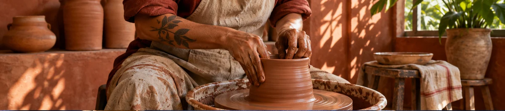

A primeira forma nasce no giro.
Escolha o que quer tentar fazer. Depois, veja as sessões com uma bancada, um torno e tempo para começar.
Ver sessões de torno
O que você faz na bancada
Em 90 minutos, você centraliza o barro, abre a forma e escolhe uma das peças para a primeira queima.